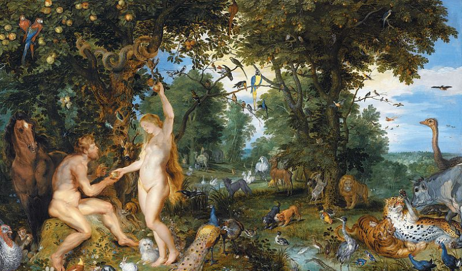

《圣经》中上帝按照自己的形象造的第一个人类是个男人，那他自己的性别呢？泥土造人的方式又有何隐喻？人类最初在伊甸园当中过着采集狩猎的生活，却因为罪过才从事农业。这背后又有怎样的真相？今天，请继续跟随小王博士，一同了解《圣经》背后的历史真实。
一、上帝的性别
上帝已经创造论温暖万物的光芒，滋润生命的水源，也就为生命的产生做了准备，从第三天让水汇聚，露出地面开始，上帝就创造了各种植物。第五天创造水生动物和飞禽，第六天就创造了各种陆地生物，然后按照自己的形象造了人，第七天大功告成，上帝开始休息，这就是安息日的来历。
关于上帝造人的细节，创世纪最初的几篇并没有很明确的讲述，但是在随后讲述伊甸园的篇章当中，却告诉了我们一些要紧的东西。说人类的祖先亚当（Adam）是上帝用土造出来的。而根据另外一些没有被引入《圣经》的传说，上帝从东南西北四个方向各取了一些泥土来造亚当。无论如何，传说都指出，人祖亚当是按照上帝的形象创造的。
上帝造人
那是不是说上帝是男人呢？这个可未必，因为之前的经文（1:27）有这样的话：男人女人，都依照他的模样”。这样说来，女人也是按照上帝的形象造的。难道上帝是双性人？基督徒的解释是，卑微的凡人才有性别这回事，全能的上帝无所谓性别，性别那根本就不是上帝的属性。好吧，如果上帝没有性别属性，那上帝为什么要造出有性别的人呢？
原因其实也不复杂，只要我们愿意承认，一神教的《圣经》，里面很多内容是来自其他的多神教的。创世纪的很多传说都来自巴比伦神话，创世纪头几章，神的名字是“Elohim”（艾洛西姆），这是个复数名词。在巴比伦和苏美尔的神话当中，创造世界和人的是马尔杜克神，他也是用泥土创造了人类，同样的，神话当中也有一个主管生育的女神，名字叫伊什塔尔。所以这句经文在多神教语境下是一点问题都没有的，神有多个，有男有女，男人女人分别按照男神女神的形象创造。
巴比伦神话当中创造人类的马尔杜克神
二、神奇的泥土
创造人类的故事在苏美尔的传说当中有很多版本，但是都有一个共同点，那就是神用泥土造人。用泥土造人这一点对我们中国人并不陌生——我们的女娲也是用泥土造人的，希腊神话当中，普罗米修斯也是用泥土造的人。人类进入文明史，大多从进入农耕时代之后开始，人们靠天靠地吃饭，大地生育万物，人们自然也会认为泥土具有生命的气息，因而人从泥土当中来并不稀奇。
而亚当的名字（adom）究竟是什么意思，一直存在争论，犹太历史学家约瑟夫斯认为是红色的意思。有人认为那是因为犹太人相信血代表生命，红土就是带血的土。不过弗雷泽的看法也许更靠谱，那就是中东地区适合耕种的土地，在被翻耕的时候就是红色的。所以亚当就是泥土的意思，也就是生命的意思。
普罗米修斯用泥土造人，泥土等于生命是一种农业的神话观念
从这个理论当中我们可以做一个推论，那就是如果一个社会还没有发展到农耕文明阶段，或者说并不以农业为主，那么这个民族的神当中，人会不会不是从泥土中创造出来的？这是有可能的，并不是所有的神话当中人都是从泥土中出现的，北欧神话当中，人类就是奥丁大神用木头造的，这个很好理解，北欧各部基本上靠海吃饭，打渔或者当海盗，所以他们相信自己和造船用的木头是自己的亲戚。至于我国北方少数民族，大家恐怕很少听说过他们的神话里面，人是从泥土来的吧。大家最熟知的是蒙古人的“苍狼白鹿”的传说，其实北方其他民族的神话当中也鲜有说人是从泥土当中造出来的。
北欧神话当中的人类是奥丁三兄弟用树木造出来的
三、伊甸园的真面目
如果《圣经》是具有浓厚农业色彩的神话，那么大家耳熟能详的一个故事就会让人很奇怪。那就是，被认为被认为是人间天堂的“伊甸园”里面，亚当和夏娃过得并不是农业的生活，相反，他们不过是采采树上的果实就能维生，这大概是采集狩猎阶段。看官们可能要说了，神话就是神话，采采果子打打猎，这样的生活保证温饱就不错了，哪里算什么黄金时代，人间天堂的生活呢？
这大约是一种很常见的误解，并且产生这种误解的原因很简单——就是我们习以为常的进步历史观。认为今天一定胜于过去，或者说我们通过自己的努力一定能促进人类社会的进步，这几乎是当代的普遍信念了，然而，这并不等于说人类历史就是像直线一样不停的向前迈进的。就采集狩猎文明来说，情况就不是这样，很多证据证明他们生活的很好。那个时候，人类刚刚学会使用工具，集群生活不久，确实是树上的果子，林中的野兽就像是交在人类的手上一样，任由人类吃喝，
按照斯塔洛里阿洛斯在《全球通史》当中的说法，那个时候的人们确实是过的很爽：衣食无忧，四小时工作，有充足的时间享受生活和自然，并且没有现代社会的拥挤和污染。很多原始的印第安部落基本上不储存粮食，而以大吃大喝为能事，威尔杜兰特指责他们愚蠢——其实这和愚蠢还是聪明没什么关系，食物那么丰富，积累起来明天吃根本没必要。
伊甸园
而第一批进入农耕文明的居民，他们的生活状态往往是不如采集狩猎时代的人们的——农业需要高强度的劳动，产量十分有限（最初的产量并不高），和牲畜定居生活在一起导致瘟疫疾病流行。两河流域的人们在很早的时候就发现了各种适合食用的粮食作物，但是却花了那么长的时间去采纳农业作为一种生产方式，并不是因为他们笨，而是因为他们舍不得走出采集狩猎时代的伊甸园。
四、走出伊甸园
如果采集狩猎时代的人类生活的巨爽无比，那么他们干嘛自找苦吃去耕地当农民呢？人类都不笨，都有理性，他们采取一种东西，放弃一种东西，都是因为有利——或者长远来看有好处。可是有时候理性的人采取行动不一定就是为了获利，也有可能是为了避祸。农业文明是采集狩猎时代的人们在面临挑战的时候采取的应对措施。
英国历史学家汤因比对这个问题有他自己的一套看法，他认为人类历史与其说是人类有意识在推动历史进步，不如说是在一种他称之为“挑战—应战”的模式当中发展的。人类在历史当中会不断面临各种困难和挑战，一个文明每解决一个问题，就比其他文明多了一项技能，这种发展未必是有必然的方向性的，很大程度上取决于人们会面临的挑战是什么，以及人们解决问题的方式。
当然，如果挑战的因素过于强大，文明无法应战，或者应战失败，文明就崩溃了。挑战应战模式的一个必然推论就是，如果一个文明没有遇到任何挑战，或者说挑战的力量太小，文明缺乏应对挑战的动力，文明就有可能陷入停滞状态。
英国历史学家汤因比
那么，采集狩猎时代的人们面临的挑战是什么呢?很简单，也是我们现在面临的一大问题——生态压力。这并不是说原始社会的人们出现了严重的环境污染之类的，而是说适合狩猎的大型动物急剧减少，同时人口大量增加，导致采集狩猎时代的人们难以继续悠闲的生活下去了。不要以为生物灭绝是现代工业文明以来才发生的事情，在采集狩猎阶段，一些很笨的，肉很多的，战斗力不够强的大型动物很多都灭绝了——比如猛犸象，猛犸象看上去很强，但是采用集体狩猎的古人对付它自有办法。
猛犸象这类大型动物曾是人类的重要食物
澳大利亚和美洲的原著居民都是从亚洲迁移过去的，这些地方如今甚至都没有大型动物了，以至西班牙人带来的马都被印第安人视为庞然大物，南美印第安人养育的最大动物大约就是羊驼了。
羊驼：跟我们那我就是大个子了
可这也并不是说，生活在伊甸园的人们受到压力就会采取农耕，实际上还有另外的方式渡过难关，那就是计划生育。贾雷德戴蒙德讲过这样一个故事，一支新西兰毛利人迁居到查塔姆群岛上，小岛难以养活大量的人口，于是这个岛的毛利人不得不进行人口控制，很多男孩一身下来就被阉割了，岛上的居民依靠这种方式让自己的社会处于静止状态。
而居住在新西兰岛上的毛利人却在不断发展，几百年后，当另外一批毛利人到达岛上的时候，岛上的居民无力招架，几乎被杀戮殆尽了。从某种意义上来说，原始的采集狩猎时代确实就像美好的伊甸园一样，最初的先民们或许真的如历史学家们所说的那样生活的很不错，但是人类如果想要总是呆在伊甸园里，是要付出巨大代价的。
查塔姆群岛最后一批原住民，他们的族人几乎被毛利人杀光了，然而几百年前他们也是毛利人
文史君说
《圣经》的故事看似不经，其实代表了农业时代的农民们对世界的想象，他们认为红色的泥土蕴含着生命，他们隐约记着采集狩猎时代的美好记忆而把当下辛苦的农活看成是惩罚。然而我们却要感谢他们勇敢的走出伊甸园，开启了人类历史的新篇章。
参考文献：
[德]维尔纳・克勒尔 ：《圣经：一部历史》，三联出版社1998年版
[美]贾雷德·戴蒙德 ：《枪炮、病菌与钢铁》，上海世纪出版社2006年版
[日]矢岛文夫：《世界最古老的神话》，东方出版社2006年版
[美]斯塔夫里阿诺斯：《全球通史》，北京大学出版社2006年版
（作者：浩然文史·隔壁小王博士）
本文的图片均来自互联网，如有侵权烦请联系作者删除，谢谢！
- 本文仅代表作者个人观点，不代表百度百科立场。举报
- 本文经授权发布，未经许可，请勿转载。如有需要，请联系tashuo@baidu.com。